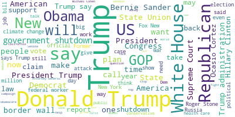
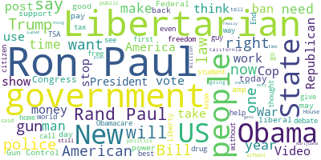
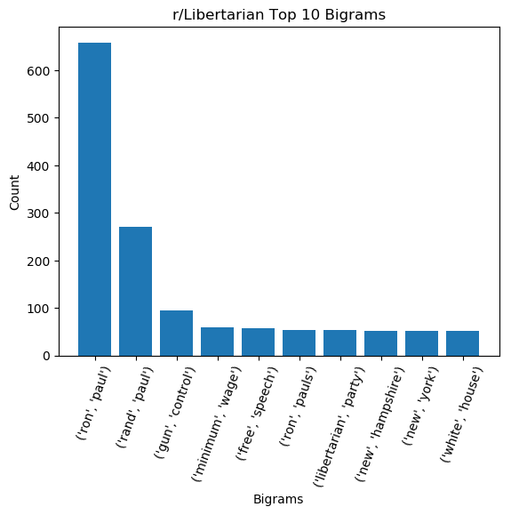
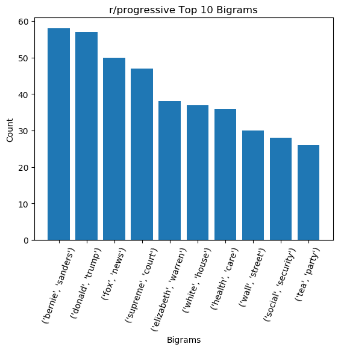
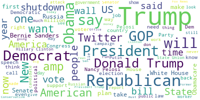
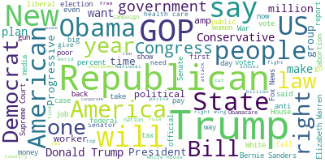
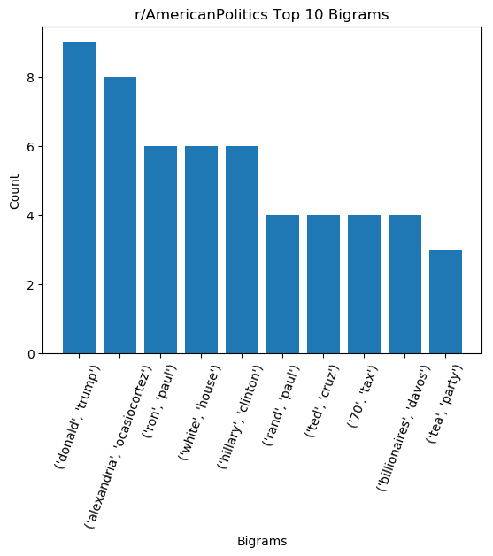
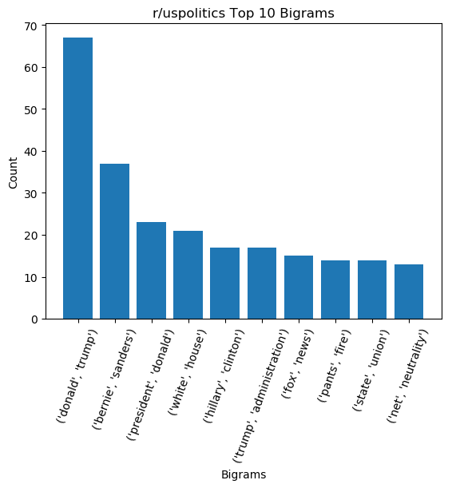

Political Subreddits are Biased
tl;dr Using natual language processing, I assessed the bias of the top 9 most popular political subreddits on the popular internet forum site, Reddit.
I found that....
Introduction
Political subreddits mostly serve the purpose as an aggregate of news articles. Someone posts an article,
some users upvote and downvote the article, and others participate in the discussion of the article by commenting on
it. As it stands, accurately gaguing the political bias of even a news article is an extremely complex and
challenging problem that PhDs are working on. Since political subreddits are essentially article aggregate sites,
accurately gauging the political bias of a subreddit is even more difficult. To work around this almost intractable
problem, I developed my own metric for a subreddit's bias based on the title of each post (which almost always is the
title of an article) and the post's score. The list of subreddits considered in this analysis were: politics,
uspolitics, AmericanPolitics, progressive, democrats, Liberal, Republican, Conservative, and Libertarian.
Overview
For my analysis, I needed to find a way to quantify the bias of a subreddit. No such way to do this currently exists, so a large problem
was coming up with my own metric that I would use. Since using the actual contents of each post (which again, on political subreddits, are mostly articles!) was out
of the question, all that I realistically had to work
with were the titles of the posts/articles. With the title of the post, I utilized the commonly used natural language process python library TextBlob.
When given a piece
or "blob" of text, TextBlob outputs two main features: the polarity and the subjectivity. Polarity is a measure from -1 to +1 where a negative score means that
the blob is completely negative, and +1 means that the blob is completely positive. Subjectivity is a measure from 0 to +1, where 0 means that the blob is completely
objective and 1 meaning that the text is completely subjective. For example, the blob "I hate the cold weather" has a polarity of -0.7 and a subjectivity of 0.95,
while the blob "there are 365 days in the year" has a polarity of 0 and subjectivity of 0.
I'll spare the exact technical details, but using each word in the title/post, I determined whether a post was about a left-leaning, right-leaning, or
neutral topic. Using the polarity, subjectivity, score of the post, and my determination of leaning of the topic of the post, I quantified the political bias of a
subreddit for that one post. By taking into account all posts, I found a way to quantify the political bias of an entire subreddit as either right-leaning,
left-leaning, or truly neutral.
All that you need to know moving forward though, is that for my metric I made the decision to have a negative score mean that a subreddit is right-leaning, a positive score
to mean that a subreddit
is left-leaning, and a score of 0 to mean that a subreddit is perfectly objective. Though there's no perfect way to intrepret what the scores actually mean,
knowing that a negative score corresponds to my algorithm thinking that a subreddit is right-leaning and a positive score corresponding to my algorithm thinking
that a subreddit is left-leaning is sufficient to get the main takeaway.
Speaking of the main takeaway, what is it?
Well, here's the thing. My metric didn't do the best job of gauging the political bias of every subreddit. But, that doesn't mean it's completely useless.
Interestingly, according to my metric, r/politics is the most conservative by far, with a score of almost 7x that of
r/Libertarian and r/Conservative. As we continue to (openly) move left in the political spectrum, one would expect subreddits to follow suit:
theoritically, the mainstream subreddits should become
less and less conservative. Since my metric uses the title of the articles, most articles. I suspect that a few outliers
are pushing the bias score of r/politics to be heavily right leaning according to my metric. In order to get a better
idea of what's going on, we need to see what the most common words being posted are.
Political Bias Score Over Time

A Deeper Look Into r/politics

Visualizing the most common words posted on r/politics using a wordcloud, we unsurprisingly see Trump at the forefront of the
popularity contest. Looking deeper, we see words and phrases like "Republican," "North Korea," "climate change,"
"russia investigation," "health care," and "Fox News" are also popular topics.

A bigram is a string of two adjacent words.The most common bigrams confirm the overwhelming popularity of Trump and the White House, with those topics taking
6 out of the top 8 spots (removing the unimportant bigrams).
A Deeper Look Into r/Conservatives
In contrast, let's take a look at what r/Conservatives like to post about.

For some context, as of November 2019, r/Conservatives is the third most popular political subreddit by subcribers to r/politics,
while r/Libertarians is the second most popular by subscribers.
We see that instead of being coompletely dominated by versions of "Donald Trump" and "white house", r/Conservatives posts
are more diverse. There's a strong presence of "Obama," "conservative," "democrat," "liberal," "left," and interestingly, "attack",
"muslim," "media," "Black," "antifa," and "police".

From the top 10 bigrams, we see that
A Deeper Look Into r/Libertarian



On the other end of the spectrum, we now take a look at r/Democrats, which comes in as the 4th most popular political subreddit.

Interestingly, we don't see as many issue-oriented words as we do in r/Conservatives, or even r/politics.
Appendix: The rest of the wordclouds
AmericanPolitics

Liberal

Progressive

Republican

uspolitics

Appendix: The rest of the top 10 bigrams
AmericanPolitics

Liberal

Progressive
Republican

uspolitics

Conservative
democrats

Political Bias of Subreddits Over the Years
This plot shows the political bias of each subreddit over time for the month of January from 2011 to 2017. Subreddits that have a score of 0 were not active for
that date. From this plot, we can see that my metric thinks that subreddits have gotten more conservative over time. Looking at r/politics shows this
Appendix: Methodology
As mentioned in the introduciton, I had to create my own metric to gague the political bias of the subreddit. Here's how:
For each post with a score of 10 or over, take the log of the score, then normalize the score by the number of subscribers. Count the number of words in the title that are in my
set of "conservative words" and the number of words that are in my set of "liberal words". If there are more conservative words than liberal words,
the article is probably about a conservative topic, so multiply it by -1 (I wanted conservative to be negative, and liberal positive).
If not, leave the score as is. If the title is subjective, multiply the score by 50 (giving the post a weight of at least 5x since the min subjectivity
score is 0.1). Finally, multiply by the polarity.
Doing this let my metric define negative sentiment towards a conservative topic as "left leaning" (overall score > 0), and positive sentiment towards a
liberal topic also be "left leaning," and so on.
My metric
Because of issues with computation time, I had to scale down my data to be the posts in the month of January from the years 2011-2019.
Liberal words: "progressive","Biden","universal basic income","AOC", "Ocasio-Cortez", "liberal", "democrat", "Obama", "Clinton", "Sanders",
"green new deal", "leftist", "Yang", "Warren", "Kamala", "medicare for all"
Conservative words: "Cheney","Shapiro","Koch","Paul Ryan","Rand Paul","Bush","Palin","Mattis","McCain","Romney", "Trump",
"Cruz", "republican", "Kushner", "conservative", "GOP", "Pence"
Reddit political image from https://blog.thedataincubator.com/2018/06/a-study-of-reddit-politics/
Textblob image from https://textblob.readthedocs.io/en/dev/